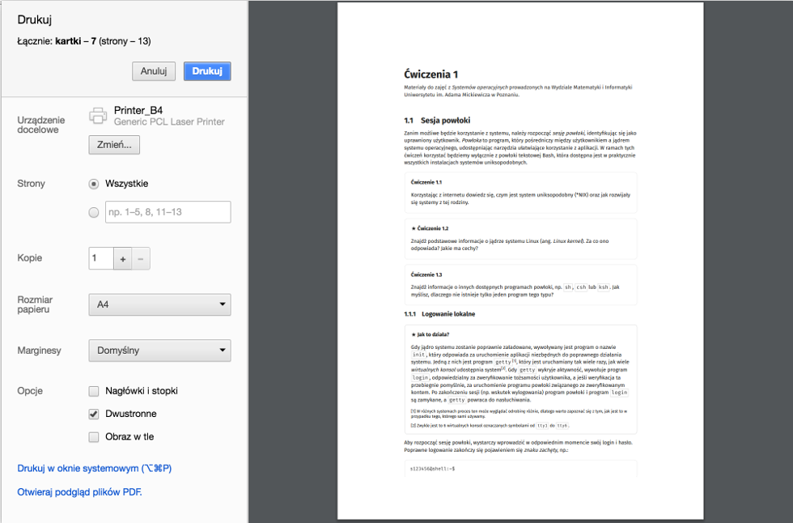

Drukowanie materiałów
Wszystkie materiały zebrane na tej stronie są przystosowane do drukowania, a zastosowane arkusze styli CSS modyfikują ustawienia drukarki. Dzięki temu wydrukowane materiały wyglądają estetycznie. Ważne jest, aby drukując materiały z tej strony (korzystając ze standardowych narzędzi drukowania udostępnianych przez przeglądarkę) nie zapomnieć:
- wyłączyć drukowania nagłówków i stopek,
- ustawić marginesów strony na domyślne.
Przykładowe ustawienia dla przeglądarki Chrome wraz z podglądem dobrze sformatowanego wydruku pokazano poniżej.

Przydatna literatura uzupełniająca
- W. E. Shotts Jr, Linux. Wprowadzenie do wiersza poleceń, Helion S.A., Gliwice 2015 (oryginalna wersja angielska do pobrania w formie pliku
pdfna stronie autora) - B. W. Kernighan, D. M. Ritchie, Język ANSI C, Wydawnictwa Naukowo-Techniczne, Warszawa 2003 (proszę uważać na wersję wydaną przez wydawnictwo Helion — jest mizernie przetłumaczona)
- R. Sokół, DOS. Leksykon kieszonkowy, Wydawnictwa Helion, Gliwice 2005